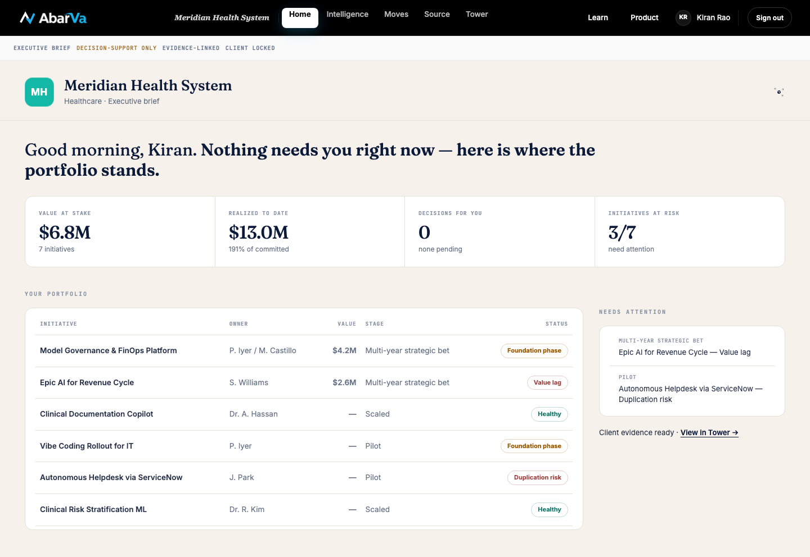
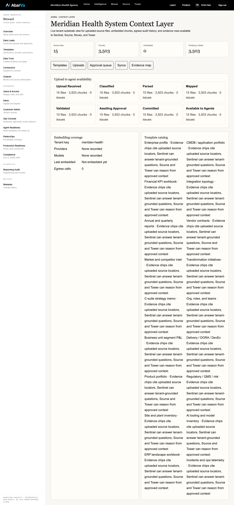
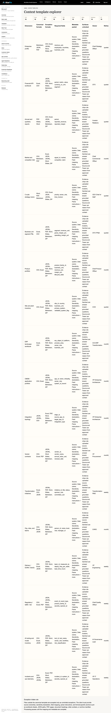
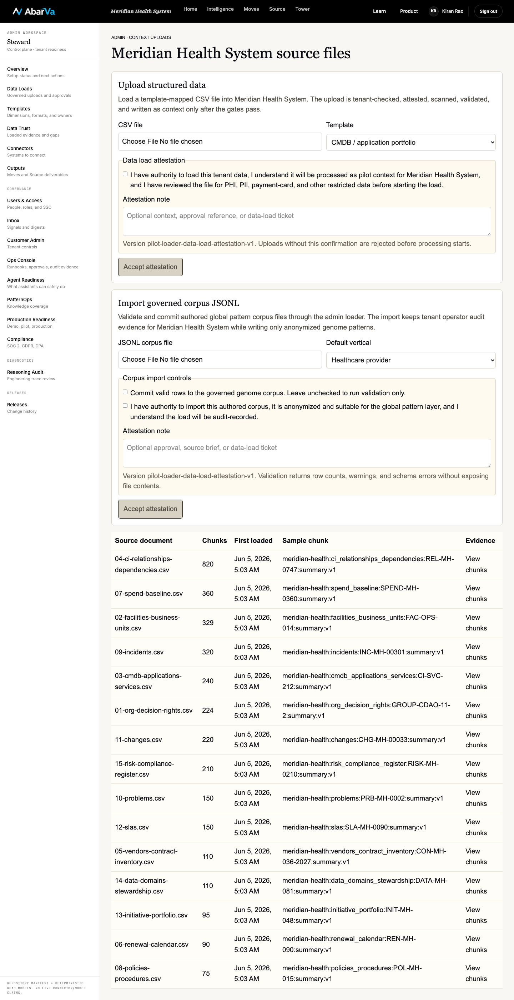
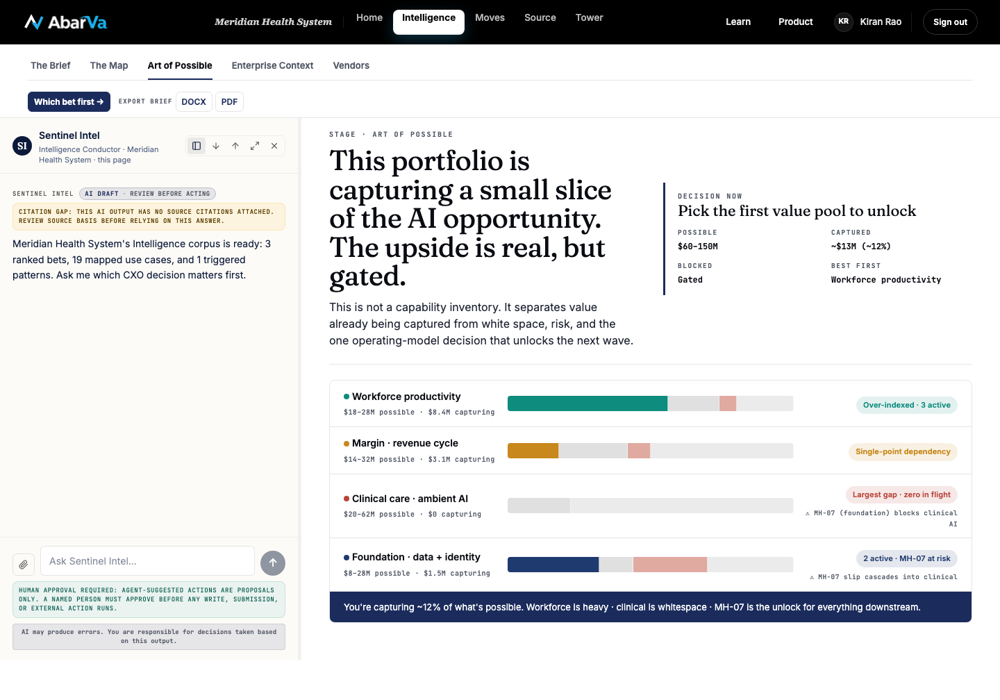
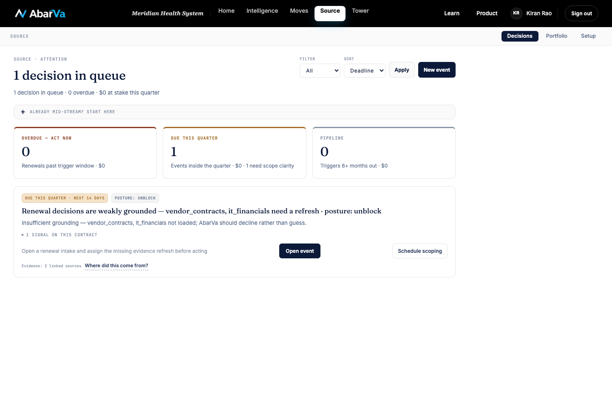

Meridian Demo Walkthrough Screenshots

1. Home · Meridian CDAO landing
No console errors captured.
Meridian Health System Home Intelligence Moves Source Tower Learn Product KR Kiran Rao Sign out EXECUTIVE BRIEF DECISION-SUPPORT ONLY EVIDENCE-LINKED CLIENT LOCKED MH Meridian Health System Healthcare · Executive brief Good morning, Kiran. Nothing needs you right now — here is where the portfolio stands. VALUE AT STAKE $6.8M 7 initiatives REALIZED TO DATE $13.0M 191% of committed DECISIONS FOR YOU 0 none pending INITIATIVES AT RISK 3/7 need attention YOUR PORTFOLIO INITIATIVE OWNER VALUE STAGE STATUS Model Governance & FinOps Platform P. Iyer / M. Castillo $4.2M Multi-year strategic bet Foundation phase Epic AI for Revenue Cycle S. Williams $2.6M Multi-year strategic bet Value lag Clinical Documentation Copilot Dr. A. Hassan — Scaled Healthy Vibe Coding Rollout for IT P. Iyer — Pilot Foundation phase Autonomous Helpdesk via ServiceNow J. Park — Pilot Duplication risk Clinical Risk Stratification ML Dr. R. Kim — Scaled Healthy NEEDS ATTENTION MULTI-YEAR STRATEGIC BET Epic AI for Revenue Cycle — Value lag PILOT Autonomous Helpdesk via ServiceNow — Duplication risk Client evidence ready · View in Tower →

2. Admin Setup · Context layer overview
No console errors captured.
Meridian Health System Home Intelligence Moves Source Tower Learn Product KR Kiran Rao Sign out ADMIN WORKSPACE Steward Control plane · tenant readiness Overview Setup status and next actions Data Loads Governed uploads and approvals Templates Dimensions, formats, and owners Data Trust Loaded evidence and gaps Connectors Systems to connect Outputs Moves and Source deliverables GOVERNANCE Users & Access People, roles, and SSO Inbox Signals and digests Customer Admin Tenant controls Ops Console Runbooks, approvals, audit evidence Agent Readiness What assistants can safely do PatternOps Knowledge coverage Production Readiness Demo, pilot, production Compliance SOC 2, GDPR, DPA DIAGNOSTICS Reasoning Audit Engineering trace review RELEASES Releases Change history REPOSITORY MANIFEST + DETERMINISTIC READ MODELS. NO LIVE CONNECTOR/MODEL CLAIMS. ADMIN · CONTEXT LAYER Meridian Health System Context Layer Live tenant substrate view for uploaded source files, embedded chunks, egress audit history, and evidence rows available to Sentinel, Source, Moves, and Tower. Source files 15 Chunks 3,503 Embedded 0 Pending or failed 3,503 Templates Uploads Approval queue Syncs Evidence map Upload to agent availability Upload Received 15 files · 3,503 chunks · 0 issues Classified 15 files · 3,503 chunks · 0 issues Parsed 15 files · 3,503 chunks · 0 issues Mapped 15 files · 3,503 chunks · 0 i

3. Admin Setup · Tenant-aware upload templates
No console errors captured.
Meridian Health System Home Intelligence Moves Source Tower Learn Product KR Kiran Rao Sign out ADMIN WORKSPACE Steward Control plane · tenant readiness Overview Setup status and next actions Data Loads Governed uploads and approvals Templates Dimensions, formats, and owners Data Trust Loaded evidence and gaps Connectors Systems to connect Outputs Moves and Source deliverables GOVERNANCE Users & Access People, roles, and SSO Inbox Signals and digests Customer Admin Tenant controls Ops Console Runbooks, approvals, audit evidence Agent Readiness What assistants can safely do PatternOps Knowledge coverage Production Readiness Demo, pilot, production Compliance SOC 2, GDPR, DPA DIAGNOSTICS Reasoning Audit Engineering trace review RELEASES Releases Change history REPOSITORY MANIFEST + DETERMINISTIC READ MODELS. NO LIVE CONNECTOR/MODEL CLAIMS. ADMIN · CONTEXT TEMPLATES Context template explorer CSV 18 Excel 18 JSON 18 JSONL 18 PDF 18 Word 18 Slides 18 Markdown 18 ZIP 18 Dimension Canonical formats Exception formats Required fields Metadata packet Surfaces unlocked Owner Refresh Enterprise profile Markdown, JSON, PDF CSV, Excel, JSONL, Word, Slides, ZIP revenue_usd, employees, countries, business_units Source system, Data owner, Sensitivity declaration, Field mapping, Parse instructions + more Evidence chips cite uploaded source locators, Sentinel can answer tenant-grounded question

4. Admin Setup · Upload console
No console errors captured.
Meridian Health System Home Intelligence Moves Source Tower Learn Product KR Kiran Rao Sign out ADMIN WORKSPACE Steward Control plane · tenant readiness Overview Setup status and next actions Data Loads Governed uploads and approvals Templates Dimensions, formats, and owners Data Trust Loaded evidence and gaps Connectors Systems to connect Outputs Moves and Source deliverables GOVERNANCE Users & Access People, roles, and SSO Inbox Signals and digests Customer Admin Tenant controls Ops Console Runbooks, approvals, audit evidence Agent Readiness What assistants can safely do PatternOps Knowledge coverage Production Readiness Demo, pilot, production Compliance SOC 2, GDPR, DPA DIAGNOSTICS Reasoning Audit Engineering trace review RELEASES Releases Change history REPOSITORY MANIFEST + DETERMINISTIC READ MODELS. NO LIVE CONNECTOR/MODEL CLAIMS. ADMIN · CONTEXT UPLOADS Meridian Health System source files Upload structured data Load a template-mapped CSV file into Meridian Health System. The upload is tenant-checked, attested, scanned, validated, and written as context only after the gates pass. CSV file Template Enterprise profile Financial KPI workbook Annual and quarterly reports Market and competitor intel C-suite strategy memo Business unit segment P&L Product portfolio Site and plant inventory ERP landscape workbook CMDB / application portfolio Integration topology Vendor cont

5. Admin Setup · Approval and embedding queue
No console errors captured.
Meridian Health System Home Intelligence Moves Source Tower Learn Product KR Kiran Rao Sign out ADMIN WORKSPACE Steward Control plane · tenant readiness Overview Setup status and next actions Data Loads Governed uploads and approvals Templates Dimensions, formats, and owners Data Trust Loaded evidence and gaps Connectors Systems to connect Outputs Moves and Source deliverables GOVERNANCE Users & Access People, roles, and SSO Inbox Signals and digests Customer Admin Tenant controls Ops Console Runbooks, approvals, audit evidence Agent Readiness What assistants can safely do PatternOps Knowledge coverage Production Readiness Demo, pilot, production Compliance SOC 2, GDPR, DPA DIAGNOSTICS Reasoning Audit Engineering trace review RELEASES Releases Change history REPOSITORY MANIFEST + DETERMINISTIC READ MODELS. NO LIVE CONNECTOR/MODEL CLAIMS. ADMIN · APPROVAL QUEUE Meridian Health System approval queue Chunk Source document Index State Last attempt Error meridian-health:slas:SLA-MH-0090:summary:v1 12-slas.csv 0 pending Jun 5, 2026, 5:38 AM Awaiting embedding meridian-health:slas:SLA-MH-0091:summary:v1 12-slas.csv 0 pending Jun 5, 2026, 5:38 AM Awaiting embedding meridian-health:ci_relationships_dependencies:REL-MH-0359:summary:v1 04-ci-relationships-dependencies.csv 0 pending Jun 5, 2026, 5:38 AM Awaiting embedding meridian-health:ci_relationships_dependencies:REL-MH-0360:summary:

6. Intelligence · Brief
No console errors captured.
Meridian Health System Home Intelligence Moves Source Tower Learn Product KR Kiran Rao Sign out The Brief The Map Art of Possible Enterprise Context Vendors Which bet first → EXPORT BRIEF DOCX PDF SI Sentinel Intel Intelligence Conductor · Meridian Health System · The Brief SENTINEL INTEL AI DRAFT · REVIEW BEFORE ACTING CITATION GAP: THIS AI OUTPUT HAS NO SOURCE CITATIONS ATTACHED. REVIEW SOURCE BASIS BEFORE RELYING ON THIS ANSWER. Meridian Health System has 3 AI bets worth deciding this quarter. Ask me which one should move now, what evidence would change the ranking, or where ownership is still blocking value. ↑ HUMAN APPROVAL REQUIRED: AGENT-SUGGESTED ACTIONS ARE PROPOSALS ONLY. A NAMED PERSON MUST APPROVE BEFORE ANY WRITE, SUBMISSION, OR EXTERNAL ACTION RUNS. AI may produce errors. You are responsible for decisions taken based on this output. INTELLIGENCE · SENTINEL INTEL Three bets above the line for Meridian Health System this quarter. Sentinel's read for this quarter: Population Health AI is your highest-confidence call (87/100) — $8M–$24M of MSSP shared savings sits on the table within 14 months. Ambient AI Clinical Documentation is over-delivering at 141% of committed value (MH-01) and is ready for phase-2 expansion. Sepsis Early Warning is the dark horse · direct CMS quality impact, but every clinical-band move is gated on MH-07 foundation work landing first. DECI

7. Intelligence · Map tab
No console errors captured.
Meridian Health System Home Intelligence Moves Source Tower Learn Product KR Kiran Rao Sign out The Brief The Map Art of Possible Enterprise Context Vendors Which bet first → EXPORT BRIEF DOCX PDF SI Sentinel Intel Intelligence Conductor · Meridian Health System · The Map SENTINEL INTEL AI DRAFT · REVIEW BEFORE ACTING CITATION GAP: THIS AI OUTPUT HAS NO SOURCE CITATIONS ATTACHED. REVIEW SOURCE BASIS BEFORE RELYING ON THIS ANSWER. Looking at Population Health AI for ACOs. Lifecycle scaling · engagement not started. Ask me about cascade dependencies, evidence, or how this connects to the rest of your portfolio. ↑ HUMAN APPROVAL REQUIRED: AGENT-SUGGESTED ACTIONS ARE PROPOSALS ONLY. A NAMED PERSON MUST APPROVE BEFORE ANY WRITE, SUBMISSION, OR EXTERNAL ACTION RUNS. AI may produce errors. You are responsible for decisions taken based on this output. INTELLIGENCE · THE MAP The portfolio is not scattered. It has one readiness constraint running through the best bets. The map turns Meridian Health System's 19 AI use cases into a decision landscape: what is in flight, what is blocked, and what depends on the same data, workflow, and adoption foundations. HEALTHCARE IDN 19 USE CASES 6 IN FLIGHT 1 AT RISK 11 CANDIDATE DECISION NOW Sequence the foundation before scaling UNBLOCKS 6 bets RISK High OWNERS CFO + CIO PATTERN P-HC-014 19 OF 19 BETS · CLICK ANY NODE FOR THE BRIEF In flight At

8. Intelligence · Art of Possible tab
No console errors captured.
Meridian Health System Home Intelligence Moves Source Tower Learn Product KR Kiran Rao Sign out The Brief The Map Art of Possible Enterprise Context Vendors Which bet first → EXPORT BRIEF DOCX PDF SI Sentinel Intel Intelligence Conductor · Meridian Health System · this page SENTINEL INTEL AI DRAFT · REVIEW BEFORE ACTING CITATION GAP: THIS AI OUTPUT HAS NO SOURCE CITATIONS ATTACHED. REVIEW SOURCE BASIS BEFORE RELYING ON THIS ANSWER. Meridian Health System's Intelligence corpus is ready: 3 ranked bets, 19 mapped use cases, and 1 triggered patterns. Ask me which CXO decision matters first. ↑ HUMAN APPROVAL REQUIRED: AGENT-SUGGESTED ACTIONS ARE PROPOSALS ONLY. A NAMED PERSON MUST APPROVE BEFORE ANY WRITE, SUBMISSION, OR EXTERNAL ACTION RUNS. AI may produce errors. You are responsible for decisions taken based on this output. STAGE · ART OF POSSIBLE This portfolio is capturing a small slice of the AI opportunity. The upside is real, but gated. This is not a capability inventory. It separates value already being captured from white space, risk, and the one operating-model decision that unlocks the next wave. DECISION NOW Pick the first value pool to unlock POSSIBLE $60–150M CAPTURED ~$13M (~12%) BLOCKED Gated BEST FIRST Workforce productivity Workforce productivity $18–28M possible · $8.4M capturing Over-indexed · 3 active Margin · revenue cycle $14–32M possible · $3.1M capturing

9. Intelligence · Enterprise Context tab
No console errors captured.
Meridian Health System Home Intelligence Moves Source Tower Learn Product KR Kiran Rao Sign out The Brief The Map Art of Possible Enterprise Context Vendors Which bet first → EXPORT BRIEF DOCX PDF SI Sentinel Intel Intelligence Conductor · Meridian Health System · this page SENTINEL INTEL AI DRAFT · REVIEW BEFORE ACTING CITATION GAP: THIS AI OUTPUT HAS NO SOURCE CITATIONS ATTACHED. REVIEW SOURCE BASIS BEFORE RELYING ON THIS ANSWER. Meridian Health System's Intelligence corpus is ready: 3 ranked bets, 19 mapped use cases, and 1 triggered patterns. Ask me which CXO decision matters first. ↑ HUMAN APPROVAL REQUIRED: AGENT-SUGGESTED ACTIONS ARE PROPOSALS ONLY. A NAMED PERSON MUST APPROVE BEFORE ANY WRITE, SUBMISSION, OR EXTERNAL ACTION RUNS. AI may produce errors. You are responsible for decisions taken based on this output. ENTERPRISE CONTEXT Meridian Health System context fabric Internal client context has not been loaded for this tenant yet. Day One templates can still be used to seed org, systems, vendors, incidents, policies, spend, and stewardship data.

10. Moves · Strategic Moves portfolio
No console errors captured.
Meridian Health System Home Intelligence Moves Source Tower Learn Product KR Kiran Rao Sign out Strategic Moves + New Move 8 MOVES 3 NEED ATTENTION 4 ON TRACK $115M AT STAKE LIVE └─ HEALTHCARE_PROVIDER-AMBIENT-2026 · P0 Originate · sponsor/founder decision pending → └─ HEALTHCARE_PROVIDER-AI-2026 · P1 Charter · sponsor/founder decision pending → └─ HEALTHCARE_PROVIDER-STALLED-2026 · P0 Originate · sponsor/founder decision pending → Portfolio map Phase × value at stake. 8 moves in flight. NEEDS ATTENTION AWAITING DECISION ON TRACK HEALTHY / EARLY Strategic moves 8 MOVES · ALL TENANTS Sort: Value Sort: Phase Sort: Attention Sort: Name CARDS KANBAN SCATTER Healthcare Data Analytics Modernization for Agentic Care - No Raw ID Smoke 2026-05-02 HEALTHCARE_PROVIDER-HEALTHCARE-2026 · MERIDIAN HEALTH SYSTEM PLATFORM MODERNIZATION ON TRACK · P5 Mobilize & Handoff · Decommission legacy · upcoming Sponsor: Katherine Oshima Value: $29M tracked Healthcare Data Analytics Modernization for Agentic Care - E2E Meridian 2026-05-02 HEALTHCARE_PROVIDER-HEALTHCARE-2026 · MERIDIAN HEALTH SYSTEM PLATFORM MODERNIZATION VALIDATED · P5 Mobilize & Handoff · AI Governance Pre-Clearance · upcoming Sponsor: Sarah Chen Value: $29M tracked Healthcare Data Analytics Modernization for Agentic Care - UX Agent Smoke 2026-05-02 HEALTHCARE_PROVIDER-HEALTHCARE-2026 · MERIDIAN HEALTH SYSTEM PLATFORM MODERNIZATION ON TR

11. Source · Sourcing module
No console errors captured.
Meridian Health System Home Intelligence Moves Source Tower Learn Product KR Kiran Rao Sign out SOURCE Decisions Portfolio Setup SOURCE · ATTENTION 1 decision in queue 1 decision in queue · 0 overdue · $0 at stake this quarter FILTER All Overdue Due Pipeline SORT Deadline Value Vendor Apply New event ＋ ALREADY MID-STREAM? START HERE OVERDUE — ACT NOW 0 Renewals past trigger window · $0 DUE THIS QUARTER 1 Events inside the quarter · $0 · 1 need scope clarity PIPELINE 0 Triggers 6+ months out · $0 DUE THIS QUARTER · NEXT 14 DAYS POSTURE: UNBLOCK Renewal decisions are weakly grounded — vendor_contracts, it_financials need a refresh · posture: unblock Insufficient grounding — vendor_contracts, it_financials not loaded; AbarVa should decline rather than guess. 1 SIGNAL ON THIS CONTRACT Open a renewal intake and assign the missing evidence refresh before acting Open event Schedule scoping Evidence: 2 linked sources Where did this come from?

12. Tower · Portfolio and ledger
No console errors captured.
Meridian Health System Home Intelligence Moves Source Tower Learn Product KR Kiran Rao Sign out TOWER Portfolio Scorecards Gates Dependencies Executive brief A Atlas Tower Conductor — observes portfolio pressure, drift, and signals. IN REPLY TO AI-assisted decision support: review citations, assumptions, and missing data before acting on Atlas output. ATLAS AI DRAFT · REVIEW BEFORE ACTING Atlas read: 3 grounded threads in Meridian Health System. - Next: open the cited initiative, signal, or evidence item in Tower and assign the owner for the first missing decision input. SUGGESTED QUESTIONS Show me the lagging programs by realized value Re-rank pressures by attribution confidence Which pressure has the strongest evidence? Brief me for the next governance meeting ↑ HUMAN APPROVAL REQUIRED: AGENT-SUGGESTED ACTIONS ARE PROPOSALS ONLY. A NAMED PERSON MUST APPROVE BEFORE ANY WRITE, SUBMISSION, OR EXTERNAL ACTION RUNS. AI may produce errors. You are responsible for decisions taken based on this output. TOWER · THE IT PORTFOLIO · TWR-IDX-PORTFOLIO The IT Portfolio — Tuesday, May 12 ATLAS · MERIDIAN HEALTH SYSTEM · 12:00 AM PT Is the AI portfolio creating measurable value, and what needs executive action now? AI-ASSISTED DECISION SUPPORT · HUMAN REVIEW REQUIRED Atlas proposes next-step decision support only. It does not approve spending, vendor action, sequencing, or program status